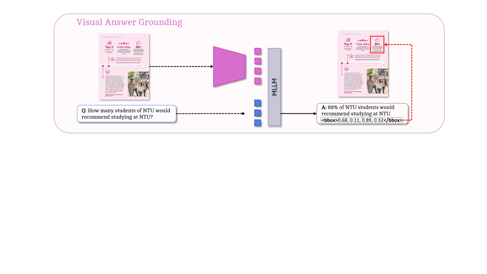
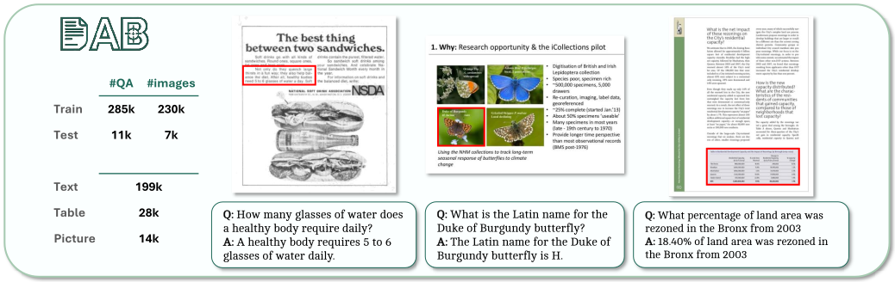

A large-scale benchmark for evaluating and training document VQA models with explicit visual grounding.
What is Visual Answer Grounding?
Visual Answer Grounding requires a model to not only answer a question, but also localize the document region that supports its answer.

Why does it matter?
Document VQA models can answer correctly for the wrong reasons. Grounding makes predictions more verifiable and interpretable.
Answer correctly
The model should understand the document content.
Show the evidence
The model should identify where the answer comes from.
Introducing DocAttriBench
DocAttriBench is a large-scale benchmark for Visual Answer Grounding in Document VQA, linking answers to precise supporting regions across diverse document types.

237Kdocument images
296Kgrounded QA pairs
12evidence types
8source datasets
Abstract
Answer grounding in document visual question answering remains an open challenge: most benchmarks lack grounding annotations or provide limited-quality labels, while constructing grounded datasets still requires costly manual effort. We introduce DocAttriBench (DAB), a large-scale benchmark for fine-grained, element-level source attribution in Document VQA, grounding answers to specific layout elements such as text blocks, tables, and images. To build DAB, we propose a Mask-based Perplexity-Derived Attribution method (MAPPET) that combines document layout and language modeling to identify the most informative element for each answer. MAPPET measures the increase in perplexity after masking candidate elements and attributes the answer to the element contributing most to model confidence. Applying MAPPET to multiple existing Document VQA datasets yields DAB, with 237k documents and 296k question-answer pairs with element-level grounding. We benchmark grounding-capable multimodal LLMs on DAB, evaluating answer accuracy, attribution accuracy, and overall answer quality. Results show that while larger models generally achieve higher answer accuracy, even the strongest models often fail to localize the supporting elements. DAB provides a scalable benchmark for developing grounded, verifiable, and trustworthy Document VQA models.
 arXiv
arXiv
 Dataset and models
Dataset and models